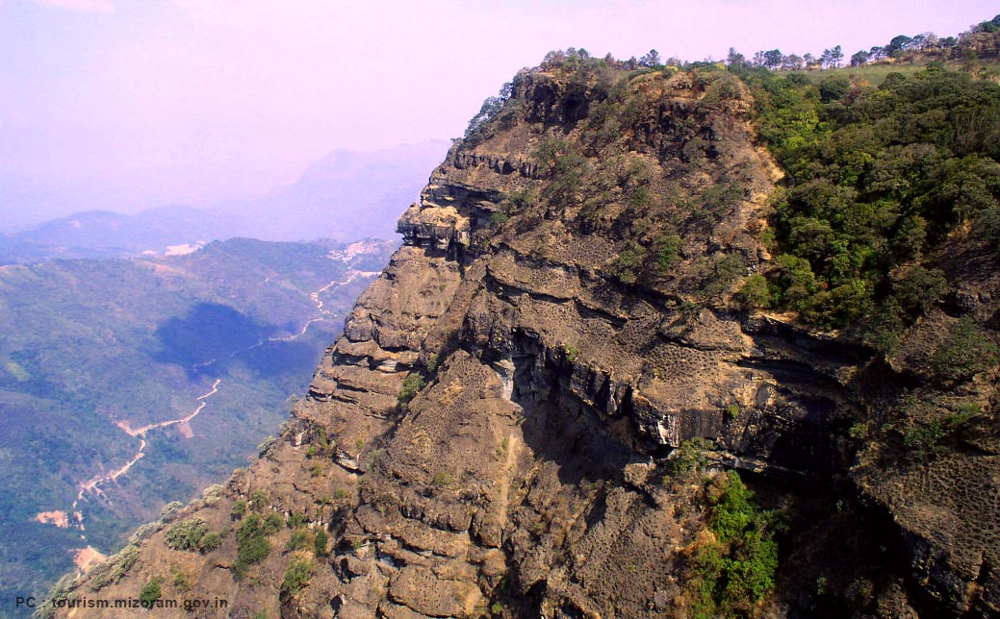
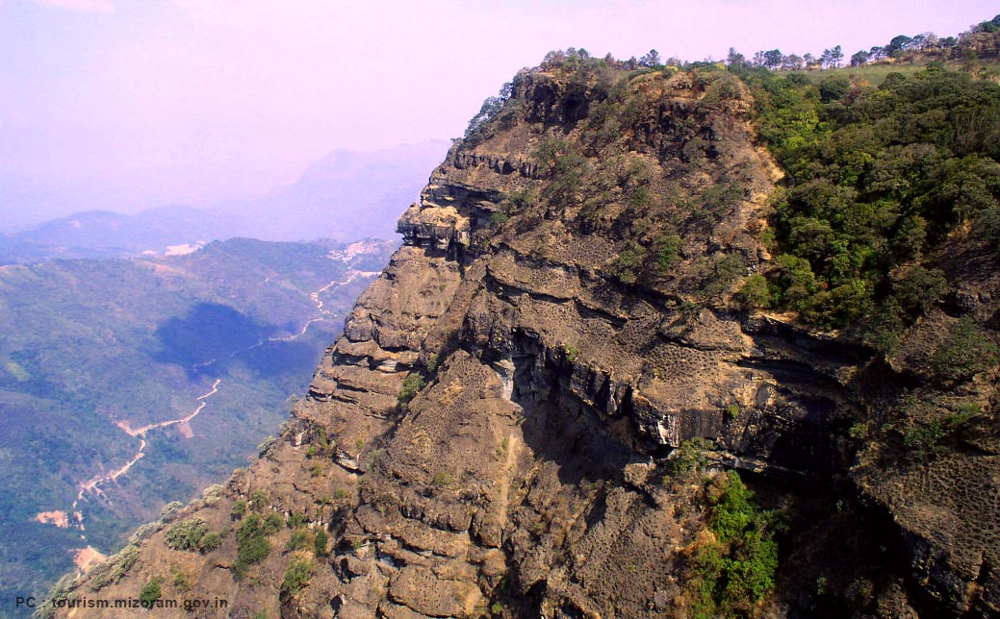

Top Wildlife Sanctuaries in North East India
. Kaziranga National Park, Assam
With a vast history and mystery behind its name, the Kaziranga National Park is one of the UNESCO World Heritage Sites in India recognized for its unique natural environment. It covers an area of 430 square kilometers comprising alluvial inundated grasslands, alluvial savanna woodlands, tropical moist mixed deciduous forests, and tropical semi-evergreen forests AND is crisscrossed by four major rivers, including the Brahmaputra. Some of the common species of flora found in the Park are elephant grass, sugarcanes, spear grass, common reed, kumbhi, Indian gooseberry, talauma hodgsonii, duabanga grandiflora, aphania rubra, and leea indica. With the influence of the River Brahmaputra, the park has formed several geographical features such as sandbars, riverine flood-formed lakes and chappories that have contributed in safeguarding the highly diverse and visible species of mammals, reptiles and birds. Kaziranga National Park houses the largest population of one-horned rhinoceros, which is the major attraction for several wildlife enthusiasts. Other significant population of animals includes the wild elephants, gaur, sambar, wild boar, Asiatic water buffalo, Eastern swamp deer, hog deer, jungle cat, leopard cat, fishing cat, mongoose, civet, pangolin, sloth bear, golden langur, golden jackal, and many more. Amongst the reptiles, the reticulated python, rock python, king cobra, Russell’s viper, monitor lizard and common krait inhabit the region in large numbers. As for bird species, the park is home to the Indian vulture, slender-billed vulture, Indian white ramped vulture and Bengal florican… which are on the verge of extinction. The common bird species that can be sighted are blabbers, weavers, and hornbills. The park also includes fifteen species of turtles. Wildlife Safari in Kaziranga Park is possible by elephant or jeep. There are also several observation towers. The best time to visit this Park is from Mid-October to March.
Dibru-Saikhowa National Park, Assam
Situated in Dibrugarh and Tinsukia districts of Assam with the influence of the Brahmaputra, Lohit, and Dibru rivers, the Dibru-Saikhowa National Park is one of the best national parks in North East India and is the largest salix swamp forest in North East India. Spreading across an area of 350 square kilometers and comprising moist mixed semi-evergreen forests, moist-mixed deciduous forests, canebrakes and grasslands… the park is a safe haven to animal species like water buffalo, wild horse, tiger and langur. The park was established in the year 1890 as Dibru Reserved Forest to help conserve the habitat of the rare white-winged wood duck. Later the park was expanded as a wildlife sanctuary followed by Dibru-Saikhowa Biosphere Reserve and later in 1999 it was declared as a national park. The best time to visit the Dibru-Saikhowa National Park is during the winter season.
sManas National Park, Assam
Home to some of the rare and endangered wildlife like the Indian Rhinoceros, tiger, leopard, Assam Roofed Turtle, Hispid Hare, Golden Langur and Pygmy Hog, the Manas National Park, spreading across an area of 950 square kilometers and covering the districts of Kokrajhar, Chirang, Baksa, Udalguri, and Darrang, is another popular wildlife destination in North East India. The park with the influence of the Manas River mostly comprises a mixed forest of Sub-Himalayan light alluvial semi-evergreen, East-Himalaya mixed moist and dry deciduous, low alluvial savanna woodland, and Assam valley semi-evergreen alluvial grasslands. It shelters approximately 55 species of mammals, 400 species of birds, 50 species of reptiles and 3 species of reptiles. Out of these wildlife… the Asian elephant, gaur, Asian water buffalo, slow loris, hoolock gibbons, otters, sloth bear, barking deer, sambar, chital and hog deer amongst the mammals are commonly sighted. Bird species like giant hornbills, jungle fowls, brahminy duck, egrets, pelican, eagles, falcons, bee-eaters, herons and ospreys are the major attractions for bird lovers. Travellers seeking for some more excitement may visit the nearby tribal villages. The Manas National Park is surrounded by many such villages and the Agrang village in the vicinity of the forest is one of the must visit places in Assam on your wildlife tour to North East India. The best time to visit this Park is during the winter season.
Nameri National Park, Assam

Comprising more than 600 species of plants, the Nameri National Park which shares its northern boundary with the Pakhui Wildlife Sanctuary in Arunachal Pradesh covers an area of about 200 square kilometers in Sonitpur district of Assam. It consists of mainly semi-evergreen and moist deciduous forest with cane and bamboo brakes and narrow strips of open grasslands along several water bodies. Established as an elephant reserve… today it is home to several other endangered species like tigers, leopards, dholes and Himalayan black bears. Other common animal species that are found in Nameri National Park are pygmy hog, gaur, wild boar, sloth bear, capped langur and Indian giant squirrel. The park is also a haven for bird lovers. The white winged wood duck, great pied hornbill, wreathed hornbill, rufous necked hornbill, ibis bill, babblers, and plovers are the major attractions amongst the bird species. The park is also a great destination for an angling and fishing holiday in India as it is fed by many small rivers and water bodies. River rafting in Nameri River and guided hiking tours in the surrounding areas of Nameri National Park are some major adventure activities on your wildlife tour to North East Indiathat you can look forward to. The best time to visit the Nameri National Park is during the winter season.
Orang National Park, Assam
Covering an area of approximately 80 square kilometers in Darrang and Sonitpur districts of Assam, the Orang National Park on the north bank of the Brahmaputra River has a strong population of the Indian one-horned rhinoceros. The park contributes the biosphere with a diversified population of flora and fauna and is largely influenced by the Pachnoi, Belsiri and Dhansiri rivers. The Park is encircled by several small tribal villages and is subject to biotic pressure resulting from deforestation and poaching. The Government of India, including World Association of Zoos and Aquariums, WWF India, Government of Assam and International Rhino Foundation has taken several measures to protect the wildlife in Orang National Park. The park has a rich vegetation of forest that is a safe haven to many mammals, reptiles and birds. The one-horned rhino and the tiger are the major attractions for wildlife enthusiasts. Other mammals include the elephant, pygmy hog, wild boar, Indian fox, civet, otter, leopard cat, fishing cat, jungle cat, rhesus macaque and Bengal porcupine. Amongst the bird species… the spot-billed pelican, great white pelican, black necked stork, ruddy shelduck, gadwall, brahminy duck, hornbills, eagle, woodpecker, weaver, and kingfisher are mostly sighted. The Orang National Park remains closed during the monsoon and the best time to visit the park is from October to April with advance authorization of the divisional forest officer.
Keibul Lamjao National Park, Manipur
One of the best features of Keibul Lamjao National Park, which is located amid the Loktak Lake in Bishnupur district in Manipur, is that it is the only floating park in the world. The national park covers an area of 40 square kilometers and is home to several tribal communities of North East India including the Thang, Brel and Maril tribes. It comprises mostly of moist semi-evergreen forests having a combination of aquatic, wetland and terrestrial ecosystem and provides a shelter to a highly diversified species of mammals, reptiles and birds. Amongst the mammals and reptiles species… the blue-crested lizard, viper, krait, cobra, rat snake, python, wild boar, civet, different types of deer and cats and flying fox are frequently sighted. The lesser sky lark, black kite, kingfishers, spotbill duck, blue-winged teal, ruddy shell duck, and cranes are the major attractions for bird lovers. The best time to visit the Keibul Lamjao National Park is during the winter season in India.
Shirui National Park, Manipur
One of the least explored national parks in North East India, the Shirui National Park in Manipur is home to some of the rare species of birds and animals, including the tragopan, tiger and leopard. The best time to visit this park is between May and June when you can sight the exotic Shirui lily flower blooming in the valley. Another attraction is the Shirui Kashong Peak near Ukhrul that stands at an elevation of 2,835 meters.
Murlen National Park, Mizoram
Close to the Chin Hills and Lengteng Wildlife Sanctuary, the Murlen National Park, which covers an area of 200 square kilometers, is home to a rich variety of flora and fauna. The park majorly constitutes animals like sambar, barking deer, Malayan giant squirrel, black bear, serow, hoolock gibbon and rhesus macaque. Amongst the bird species the hume’s pheasant, kallej pheasant, common patridges, hill myana and dark rumped swift are frequently spotted.
Phawngpui National Park, Mizoram
 

Another lesser known national park in India that is located in the blue mountains of Mizoram, the Phawngpui National Park, which is also known as Phawngpui Blue Mountain National Park, is a haven for naturalists. The park covers an area of roughly 550 square kilometers and houses animal species like the mountain goat, tiger, leopard, leopard cat, serow, goral, Asiatic black bear, and langur AND bird species like blyth’s tragopan, falcon, sunbird, dark-rumped swift, hume’s pheasant, hornbills and grey sibia. The best time to visit the Phawngpui National Park is from November to April.
Balphakram National Park, Meghalaya
One of the hotspots in North East India among the adventure enthusiasts that is spread over an area of 220 square kilometers in the district of Balphakram… the Balphakram National Park, also comprising the Garo Hills, is home to a rich variety of flora and fauna. The national park is home to water buffalo, red panda, elephant and eight species of cats. The best time to visit the Balphakram National Park is between April and June when you can also check out the various species of colourful butterflies. It is also a paradise for bird lovers. Magpie-Robin is a favourite bird seen in this bird kingdom. Some of the common birds are – Hoopoe, Long tailed Broadbill, Scarlet Minivet, Burmese Roller, Blue-throated Barbet, Red-vented Bulbul, Himalayan Black Bulbul, Himalayan Whistling Thrush, Spotted Forktail, Black-breasted Kalij Pheasant, Red Jungle Fowl, and Myna like Jungle Mynas, Hill Mynas. Besides, hornbills including the Great Indian hornbill, Florican, Indian great horned owl, Black drongo and many other birds are also found. In addition, during your wildlife tour in Balphakram National Park you can also indulge in several other activities like spelunking and tribal tour in Meglalaya.
Nokrek National Park, Meghalaya
Yet another UNESCO World Heritage Site in India renowned for its rich biosphere and located in the Garo Hills in Meghalaya, the Nokrek National Park is one of the best destinations for wildlife photography in North East. Not just because of its diversified flora and fauna but the landscape comprising hills, forests, rivers and waterfalls makes it a haven for photographers and wildlife enthusiasts. Nokrek National Park has a sparse density of species like the red panda, Asian elephant, tiger and marbled cat BUT the rare stump-tailed macaque and pig-tailed macaque are often seen while trekking to Nokrek peak. Other animals which are commonly sighted in Nokrek National Park are the water buffalo, Indian bison and deer. Amongst the bird species hornbills and Magpie-Robins are the major attractions. The Siju Bird Sanctuary and Siju Cave are two must visit places near this Park. The best time to visit the Nokrek National Park is during the summer and winter seasons.
Namdhapa National Park, Arunachal Pradesh
Spreading over an area of 1,985 square kilometers in the Eastern Himalayan biodiversity in Arunachal Pradesh, the Namdhapa National Park is the largest national park in North East India and is the only national park in India that is home to four kinds of felines – the common Indian leopard, snow leopard, clouded leopard and tiger. The Namdhapa National Park comprises many different vegetation zones, including semi-evergreen and moist deciduous forest comprising mainly of thatch and grasses. It is a safe haven to several species of mammals, reptiles and birds. The rare mammal species other than four kinds of felines include the red panda, Himalayan black bear and dhole. The common species that are frequently spotted are the red giant flying squirrel, common palm civet, mongoose, cats, wildboar, musk deer, sambar, gaur, goral, serow, takin and bharal. Amongst the bird species… different kinds of hornbills, blabbers, weavers, kingfishers, woodpeckers, eagles and owls are the major attractions for bird lovers. Travellers can also indulge themselves in a tribal tour inside the Namdhapa National Park. The Lisu, Chakma, Tangsa and Singpo are some of the indigenous tribal settlements in and around the Namdhapa National Park. The best time to visit is between October and May.
Trishna Wildlife Sanctuary, Tripura
Covering an area of 163.08 square kilometers, the Trishna Wildlife Sanctuary is a must visit place in North East India. The sanctuary comprises several water bodies and grasslands and thick patches of forests teeming with rare species of plants. The Trishna Wildlife Sanctuary is approximately 18 kilometers from Belonia and is well connected to Agartala by state highway. The wildlife sanctuary is home to the Indian gaur, golden langur, capped langur, hoollock gibbon, pheasant and many other mammals, reptiles and bird species.
Ntangki National Park, Nagaland
Located in Peren district in Nagaland, the Ntangki National Park with an area of 20,202 hectares is home to several tribal communities and major tribe is the Zeliangrong. Among the creatures that inhabit the park are the rare hoolock gibbon, golden langur, tiger, monitor lizard, python, sloth bear, hornbill, palm civets and black stork. The best time to visit the Ntangki National Park is from November to April.
Kanchendzonga National Park, Sikkim
The only national park in Sikkim which covers an area of 850 square kilometers, the Kanchendzonga National Park is home to many endangered animal species like the Snow Leopard, Himalayan Black Bear, Red Panda and Asiatic Wild Dog. It is enclosed by the mighty Himalayan ranges and preserves a rich biosphere including many medicinal plants and herbs and alpine grasses. The Kanchendzonga National Park mostly comprises a mixed forest of oak, fir, birch, maple and willow AND houses several species of mammals and birds. Amongst the mammals’ sloth bear, Himalayan Tahr, civet, Tibetan Wild Ass, Himalayan blue sheep, serow, goral and takin are some of the major attractions. There are more than 500 species of birds found in the biosphere of the park at different altitude levels